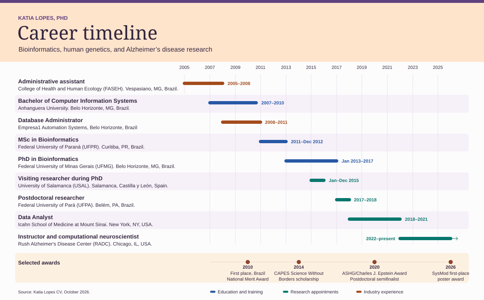

Academic CV
Appointments, education, and teaching. Updated October 2026.
Career timeline

Appointments and experience
- 2022–presentInstructor and computational neuroscientist
Rush Alzheimer’s Disease Center, Rush University Medical Center · Chicago, Illinois
- 2018–2021Data Analyst
Raj Laboratory, Icahn School of Medicine at Mount Sinai · New York
- 2017–2018Postdoctoral researcher
Human and Medical Genetics Laboratory, Federal University of Pará · Belém, Brazil
- Jan–Dec 2015Visiting researcher during PhD
University of Salamanca · Salamanca, Spain
- 2008–2011Database Administrator
Empresa1 Automation Systems · Belo Horizonte, Brazil
- 2005–2008Human Research Ethics Committee Secretary
Faculdade da Saúde e Ecologia Humana · Vespasiano, Brazil
Education
- Jan 2013–2017PhD in Bioinformatics
Federal University of Minas Gerais · Belo Horizonte, Brazil
- 2011–Dec 2012MSc in Bioinformatics
Federal University of Paraná · Curitiba, Brazil
- 2007–2010Bachelor of Computer Information Systems
Anhanguera University · Belo Horizonte, Brazil
Teaching and mentorship
- Systems biology instructor · Health Sciences Program, Institute of Medical Assistance to State Civil Servants (IAMSPE).
- Graduate mentor since 2022 · Health Sciences Program at IAMSPE and Bioinformatics Program at the Federal University of Paraná.
- Research rotation mentorship · Projects on single-cell microglial analysis at Mount Sinai and the human brain circular transcriptome at Rush.
- Guest editor, 2023–2024 · Frontiers in Genetics special issue on single-cell genomics in neurodegeneration.